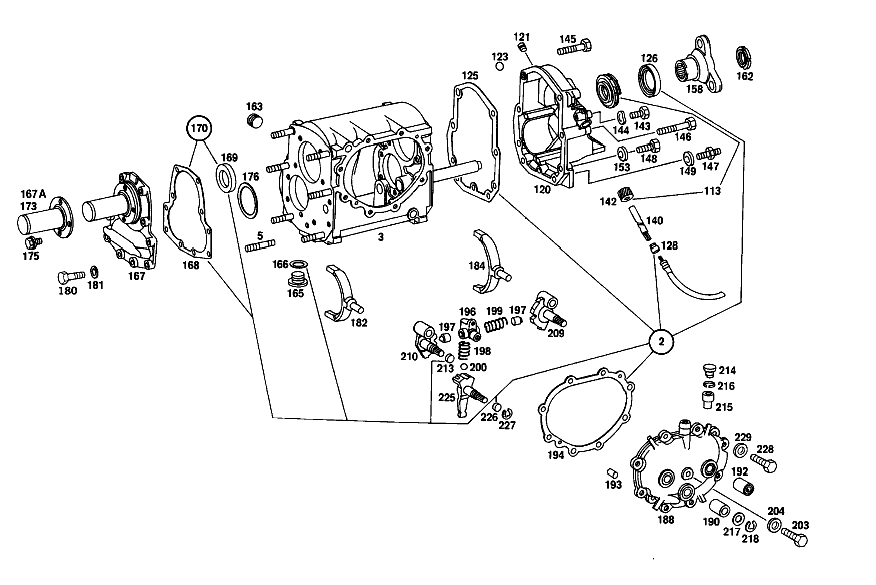

| № | Артикул | Название | Кол. | Примечание | Ограничение |
|---|---|---|---|---|---|
| 2 | A 115 260 01 68 | набор уплотнений | 1 | Рулевое управление: ВлевоКоробка передач | |
| 3 | A 115 260 09 11 | КОРПУС КП | 1 | Рулевое управление: ВлевоКоробка передач [402] БОЛЬШЕ НЕ ПОСТАВЛЯЕТСЯ | |
| 5 | N 000939 010012 | - Винт | 6 | Рулевое управление: ВлевоКоробка передач | |
| 13 | A 115 263 10 02 | ПРОМЕЖУТОЧНЫЙ ВАЛ | 1 | Рулевое управление: ВлевоКоробка передач | |
| 14 | A 115 991 06 68 | УСТАНОВОЧНАЯ ПРУЖИНА | 1 | Рулевое управление: ВлевоКоробка передач [402] БОЛЬШЕ НЕ ПОСТАВЛЯЕТСЯ | |
| 17F | A 115 260 05 08 | Блок шестерен | 1 | (GEAR SET),3RD SPEED Рулевое управление: ВлевоКоробка передач | |
| 20 | A 115 263 07 52 | Дистанционная шайба | 1 | Рулевое управление: ВлевоКоробка передач | |
| 22 | A 001 981 71 25 | ШАРИКОПОДШИПНИК | - | Рулевое управление: ВлевоКоробка передач | |
| 22 | A 004 981 42 01 | Подшипник с цил. роликами | 1 | Рулевое управление: ВлевоКоробка передач | |
| 23 | A 115 990 08 51 | гайка | 1 | Рулевое управление: ВлевоКоробка передач | |
| 27 | A 186 262 00 66 | Маслозащитное кольцо | 1 | Рулевое управление: ВлевоКоробка передач | |
| 29 | A 002 981 06 25 | ШАРИКОПОДШИПНИК | 1 | Рулевое управление: ВлевоКоробка передач | |
| 33 | A 123 262 04 94 | Пруж. стопорное кольцо | 1 | Рулевое управление: ВлевоКоробка передач | |
| 35 | A 186 262 04 51 | Проставочное кольцо | 1 | Рулевое управление: ВлевоКоробка передач | |
| 37 | A 136 994 06 35 | Пруж. стопорное кольцо | 1 | ПО НЕОБХОДИМОСТИ 1.9 MM Рулевое управление: ВлевоКоробка передач | |
| 40 | A 136 262 06 52 | Компенсационная шайба | NB | ПО НЕОБХОДИМОСТИ 0.1 MM Рулевое управление: ВлевоКоробка передач | |
| 44 | A 115 262 15 05 | Вторичный вал | 1 | Рулевое управление: ВлевоКоробка передач [004] FROM CHASSIS: 010 035377 015 039339 | |
| 46 | A 115 260 05 08 | Блок шестерен | 1 | (GEAR SET),3RD SPEED Рулевое управление: ВлевоКоробка передач | |
| 48 | A 005 981 55 10 | Игольчатый подшипник | 1 | Рулевое управление: ВлевоКоробка передач | |
| 50 | A 115 262 16 34 | Кольцо синхронизатора | 2 | Рулевое управление: ВлевоКоробка передач | |
| 52 | A 120 262 23 62 | Упорная шайба | 1 | Рулевое управление: ВлевоКоробка передач | |
| 53 | A 115 260 49 45 | Корпус синхронизатора | 1 | Рулевое управление: ВлевоКоробка передач | |
| 55 | A 115 262 12 35 | - СИНХРОНИЗАТОР | - | Рулевое управление: ВлевоКоробка передач [402] БОЛЬШЕ НЕ ПОСТАВЛЯЕТСЯ | |
| 57 | A 180 993 41 01 | - пружина | 3 | Рулевое управление: ВлевоКоробка передач | |
| 59 | N 005401 306500 | - Шар | 3 | 6.5mm Рулевое управление: ВлевоКоробка передач | |
| 60 | A 115 262 01 40 | - Поводок | 3 | Рулевое управление: ВлевоКоробка передач | |
| 61 | A 115 993 16 20 | - Торсионная пружина | 1 | Рулевое управление: ВлевоКоробка передач | |
| 63 | A 005 981 54 10 | Игольчатый подшипник | 1 | Рулевое управление: ВлевоКоробка передач | |
| 65 | A 115 990 10 51 | гайка | 1 | Рулевое управление: ВлевоКоробка передач | |
| 67 | A 005 981 56 10 | Игольчатый подшипник | 1 | Рулевое управление: ВлевоКоробка передач | |
| 70 | A 115 260 31 44 | ШЕСТЕРНЯ | 1 | ВТОРАЯ ПЕРЕДАЧА Рулевое управление: ВлевоКоробка передач [402] БОЛЬШЕ НЕ ПОСТАВЛЯЕТСЯ | |
| 73 | A 115 262 15 34 | КОЛЬЦО СИНХРОНИЗАТОРА | 2 | Рулевое управление: ВлевоКоробка передач | |
| 74 | A 115 262 09 62 | ШАЙБА УПОРНАЯ | NB | 4.0 MM Рулевое управление: ВлевоКоробка передач [402] БОЛЬШЕ НЕ ПОСТАВЛЯЕТСЯ | |
| 76 | A 115 260 48 45 | Корпус синхронизатора | 1 | Рулевое управление: ВлевоКоробка передач | |
| 78 | A 115 262 13 35 | - СИНХРОНИЗАТОР | - | Рулевое управление: ВлевоКоробка передач [402] БОЛЬШЕ НЕ ПОСТАВЛЯЕТСЯ | |
| 79 | A 180 993 41 01 | - пружина | 3 | Рулевое управление: ВлевоКоробка передач | |
| 81 | N 005401 306500 | - Шар | 3 | 6.5mm Рулевое управление: ВлевоКоробка передач | |
| 82 | A 115 262 02 40 | - ПОВОДОК | 3 | Рулевое управление: ВлевоКоробка передач [402] БОЛЬШЕ НЕ ПОСТАВЛЯЕТСЯ | |
| 84 | A 115 262 14 23 | - СКОЛЬЗ. МУФТА СИНХРОНИЗ. | - | Рулевое управление: ВлевоКоробка передач [402] БОЛЬШЕ НЕ ПОСТАВЛЯЕТСЯ | |
| 86 | A 115 262 07 11 | ШЕСТЕРНЯ | 1 | Рулевое управление: ВлевоКоробка передач | |
| 89 | A 115 262 25 62 | ШАЙБА УПОРНАЯ | 1 | ПО НЕОБХОДИМОСТИ 3.8 MM Рулевое управление: ВлевоКоробка передач [402] БОЛЬШЕ НЕ ПОСТАВЛЯЕТСЯ | |
| 91 | A 115 262 02 51 | Проставочное кольцо | 1 | Рулевое управление: ВлевоКоробка передач [402] БОЛЬШЕ НЕ ПОСТАВЛЯЕТСЯ | |
| 92 | A 005 981 56 10 | Игольчатый подшипник | 1 | Рулевое управление: ВлевоКоробка передач | |
| 94 | A 002 981 06 25 | ШАРИКОПОДШИПНИК | 1 | Рулевое управление: ВлевоКоробка передач | |
| 96 | A 115 263 09 32 | ШЕСТЕРНЯ ОБРАТНОГО ХОДА | 1 | Рулевое управление: ВлевоКоробка передач | |
| 97 | A 136 994 06 35 | Пруж. стопорное кольцо | 1 | ПО НЕОБХОДИМОСТИ 1.9 MM Рулевое управление: ВлевоКоробка передач | |
| 99 | A 136 262 06 52 | Компенсационная шайба | NB | ПО НЕОБХОДИМОСТИ 0.1 MM Рулевое управление: ВлевоКоробка передач | |
| 102 | A 115 262 26 39 | Удерживающее кольцо | 1 | ПО НЕОБХОДИМОСТИ 2.76 MM Рулевое управление: ВлевоКоробка передач | |
| 103 | N 000137 007201 | Пружинная шайба | 4 | Рулевое управление: ВлевоКоробка передач | |
| 104 | A 115 990 06 01 | болт | 4 | Рулевое управление: ВлевоКоробка передач | |
| 107 | A 001 981 71 25 | ШАРИКОПОДШИПНИК | - | Рулевое управление: ВлевоКоробка передач | |
| 107 | A 004 981 42 01 | Подшипник с цил. роликами | 1 | Рулевое управление: ВлевоКоробка передач | |
| 110 | A 115 990 09 51 | гайка | 1 | Рулевое управление: ВлевоКоробка передач | |
| 111 | A 117 262 07 21 | Шестерня заднего хода | 1 | Рулевое управление: ВлевоКоробка передач | |
| 113 | A 115 260 06 48 | ПРИВОДНАЯ ШЕСТЕРНЯ | 1 | Рулевое управление: ВлевоКоробка передач | |
| 114 | A 115 263 05 30 | ОСЬ ШЕСТЕРНИ ЗАДНЕГО ХОДА | 1 | Рулевое управление: ВлевоКоробка передач | |
| 115 | A 115 260 10 25 | Шестерня заднего хода | 1 | Рулевое управление: ВлевоКоробка передач | |
| 116 | A 117 263 01 50 | - втулка | 1 | Рулевое управление: ВлевоКоробка передач | |
| 117 | A 115 260 06 31 | Тяга переключения передач | 1 | Рулевое управление: ВлевоКоробка передач | |
| 118 | A 115 265 02 19 | Поводок | 1 | Рулевое управление: ВлевоКоробка передач | |
| 119 | N 001481 006005 | Распорный штифт | 1 | Рулевое управление: ВлевоКоробка передач | |
| 120 | A 115 260 22 16 | КРЫШКА КОРПУСА | 1 | Рулевое управление: ВлевоКоробка передач [402] БОЛЬШЕ НЕ ПОСТАВЛЯЕТСЯ | |
| 121 | A 153 264 00 55 | Пробка | 1 | Рулевое управление: ВлевоКоробка передач | |
| 123 | A 001 981 33 85 | ШАРИК | 1 | Рулевое управление: ВлевоКоробка передач [402] БОЛЬШЕ НЕ ПОСТАВЛЯЕТСЯ | |
| 125 | A 115 261 02 79 | Уплотнительная прокладка | 1 | Рулевое управление: ВлевоКоробка передач [402] БОЛЬШЕ НЕ ПОСТАВЛЯЕТСЯ | |
| 126 | A 005 997 20 46 | УПЛОТНИТ. КОЛЬЦО | - | Рулевое управление: ВлевоКоробка передач | |
| 126 | A 005 997 87 47 | УПЛОТНИТ. КОЛЬЦО | 1 | Рулевое управление: ВлевоКоробка передач | |
| 128 | A 115 274 00 60 | УПЛОТНИТ. КОЛЬЦО | 1 | Рулевое управление: ВлевоКоробка передач [402] БОЛЬШЕ НЕ ПОСТАВЛЯЕТСЯ | |
| 140 | A 115 264 01 32 | Вал | 1 | Рулевое управление: ВлевоКоробка передач | |
| 142 | A 120 264 02 31 | Ведущее колесо | - | СМ. РИС.: 113 E Рулевое управление: ВлевоКоробка передач | |
| 143 | N 000931 006083 | БОЛТ | 1 | Рулевое управление: ВлевоКоробка передач | |
| 144 | N 000137 006204 | Пружинная шайба | 1 | Рулевое управление: ВлевоКоробка передач | |
| 145 | N 000931 010232 | Винт | 2 | Рулевое управление: ВлевоКоробка передач | |
| 146 | N 000931 010300 | Винт | 2 | Рулевое управление: ВлевоКоробка передач | |
| 147 | A 115 990 13 10 | БОЛТ | 2 | Рулевое управление: ВлевоКоробка передач [402] БОЛЬШЕ НЕ ПОСТАВЛЯЕТСЯ | |
| 148 | N 000933 007019 | Винт | 3 | Рулевое управление: ВлевоКоробка передач | |
| 149 | N 000125 010518 | Шайба | - | Рулевое управление: ВлевоКоробка передач | |
| 149 | N 000125 010532 | Шайба | 6 | Рулевое управление: ВлевоКоробка передач | |
| 153 | N 000125 007408 | Шайба | - | Рулевое управление: ВлевоКоробка передач | |
| 153 | N 006902 007100 | Шайба | 3 | Рулевое управление: ВлевоКоробка передач | |
| 158 | A 115 262 11 45 | Фланец | 1 | Рулевое управление: ВлевоКоробка передач | |
| 162 | A 123 990 00 60 | гайка | 1 | Рулевое управление: ВлевоКоробка передач [004] FROM CHASSIS: 010 035377 015 039339 | |
| 163 | A 186 997 00 32 | ЗАГЛУШКА РЕЗЬБОВАЯ | 1 | M24X1,5 Рулевое управление: ВлевоКоробка передач | |
| 165 | A 094 997 24 00 | Резьбовая пробка | - | Рулевое управление: ВлевоКоробка передач | |
| 165 | A 210 997 01 32 | Резьбовая пробка | 1 | Рулевое управление: ВлевоКоробка передач | |
| 166 | N 007603 024105 | Уплотнительное кольцо | 1 | Рулевое управление: ВлевоКоробка передач | |
| 167 | A 115 260 11 21 | Крышка корпуса | - | Рулевое управление: ВлевоКоробка передач | |
| 167 | A 115 261 16 18 | КРЫШКА КОРПУСА | - | Рулевое управление: ВлевоКоробка передач | |
| 167 | A 094 261 09 00 | Крышка корпуса | 1 | Рулевое управление: ВлевоКоробка передач [402] БОЛЬШЕ НЕ ПОСТАВЛЯЕТСЯ | |
| 167A | A 115 261 02 43 | - Направляющая трубка | 1 | Рулевое управление: ВлевоКоробка передач | |
| 168 | A 115 261 00 79 | Уплотнительная прокладка | 1 | Рулевое управление: ВлевоКоробка передач | |
| 169 | A 005 997 86 47 | Уплотнительное кольцо | 1 | Рулевое управление: ВлевоКоробка передач | |
| 170 | A 115 260 00 68 | КОМПЛЕКТ УПЛОТНЕНИЙ | 1 | КРЫШКА КАРТЕРА КОР.ПЕРЕДАЧ СПЕРЕДИ Рулевое управление: ВлевоКоробка передач | |
| 173 | A 115 261 02 43 | Направляющая трубка | - | СМ. РИС.: 167 A Рулевое управление: ВлевоКоробка передач | |
| 175 | N 914005 006002 | Винт с неспадающей шайбой | - | Рулевое управление: ВлевоКоробка передач | |
| 175 | N 914005 006042 | Винт с неспадающей шайбой | 4 | Рулевое управление: ВлевоКоробка передач | |
| 176 | A 602 263 02 52 | Дистанционная шайба | NB | ПО НЕОБХОДИМОСТИ 0.10 MM Рулевое управление: ВлевоКоробка передач [402] БОЛЬШЕ НЕ ПОСТАВЛЯЕТСЯ | |
| 180 | N 000933 007006 | Винт | 10 | Рулевое управление: ВлевоКоробка передач | |
| 181 | N 000125 007408 | Шайба | - | Рулевое управление: ВлевоКоробка передач | |
| 181 | N 006902 007100 | Шайба | 10 | Рулевое управление: ВлевоКоробка передач | |
| 182 | A 602 265 01 02 | ВИЛКА ПЕРЕКЛЮЧЕНИЯ | 1 | Рулевое управление: ВлевоКоробка передач | |
| 184 | A 309 265 02 01 | ВИЛКА ПЕРЕКЛЮЧЕНИЯ | 1 | Рулевое управление: ВлевоКоробка передач | |
| 188 | A 115 260 37 13 | КРЫШКА КОРПУСА | - | Рулевое управление: ВлевоКоробка передач | |
| 188 | A 115 260 47 13 | Крышка корпуса | 1 | Рулевое управление: ВлевоКоробка передач [402] БОЛЬШЕ НЕ ПОСТАВЛЯЕТСЯ | |
| 190 | A 115 262 05 50 | - втулка | 2 | Рулевое управление: ВлевоКоробка передач | |
| 192 | A 014 981 67 10 | - ПОДШИПНИК ИГОЛЬЧАТЫЙ | - | Рулевое управление: ВлевоКоробка передач | |
| 192 | A 010 981 60 10 | - Игольчатый подшипник | 1 | Рулевое управление: ВлевоКоробка передач | |
| 193 | N 000007 006203 | - Цилиндрический штифт | 3 | Рулевое управление: ВлевоКоробка передач | |
| 194 | A 117 261 00 79 | Уплотнительная прокладка | 1 | Рулевое управление: ВлевоКоробка передач | |
| 196 | A 115 260 42 73 | Фиксирующая обойма | 1 | Рулевое управление: ВлевоКоробка передач | |
| 197 | A 115 265 05 74 | - Палец | 2 | Рулевое управление: ВлевоКоробка передач | |
| 198 | A 115 993 61 02 | - Нажимная пружина | 1 | Рулевое управление: ВлевоКоробка передач | |
| 199 | A 115 993 33 04 | - Нажимная пружина | 1 | Рулевое управление: ВлевоКоробка передач | |
| 200 | N 005401 999008 | - Шар | 2 | Рулевое управление: ВлевоКоробка передач [402] БОЛЬШЕ НЕ ПОСТАВЛЯЕТСЯ | |
| 203 | N 000933 008114 | Винт | - | M8X22\-8.8 Рулевое управление: ВлевоКоробка передач | |
| 203 | N 304017 008021 | Винт с 6-гранной головкой | 1 | M8X20 Рулевое управление: ВлевоКоробка передач | |
| 204 | N 000125 008418 | Шайба | 1 | Рулевое управление: ВлевоКоробка передач | |
| 209 | A 115 260 19 73 | ПАЗ ВКЛЮЧЕНИЯ | 1 | Рулевое управление: ВлевоКоробка передач | |
| 210 | A 115 260 38 73 | ПАЗ ВКЛЮЧЕНИЯ | 1 | Рулевое управление: ВлевоКоробка передач | |
| 213 | A 007 997 03 48 | Уплотнительное кольцо | 2 | Рулевое управление: ВлевоКоробка передач | |
| 214 | A 115 261 00 66 | Воздушный клапан | 1 | Рулевое управление: ВлевоКоробка передач | |
| 215 | A 115 261 00 53 | РАСПОРН. ТРУБКА | 1 | Рулевое управление: ВлевоКоробка передач | |
| 216 | N 009045 012000 | Пруж. стопорное кольцо | 1 | Рулевое управление: ВлевоКоробка передач | |
| 217 | A 115 990 16 40 | ШАЙБА | 3 | Рулевое управление: ВлевоКоробка передач [402] БОЛЬШЕ НЕ ПОСТАВЛЯЕТСЯ | |
| 218 | N 006799 010001 | Стопорная шайба | 2 | Рулевое управление: ВлевоКоробка передач | |
| 225 | A 115 260 12 38 | Вал упр. перекл.передач | 1 | Рулевое управление: ВлевоКоробка передач | |
| 226 | A 007 997 03 48 | Уплотнительное кольцо | 2 | Рулевое управление: ВлевоКоробка передач | |
| 227 | N 006799 010001 | Стопорная шайба | 1 | Рулевое управление: ВлевоКоробка передач | |
| 228 | N 000933 007027 | Винт | 8 | Рулевое управление: ВлевоКоробка передач | |
| 229 | N 000125 007408 | Шайба | - | Рулевое управление: ВлевоКоробка передач | |
| 229 | N 006902 007100 | Шайба | 8 | Рулевое управление: ВлевоКоробка передач | |
| 240 | A 115 260 32 80 | КРОНШТЕЙН | 1 | ||
| 243 | A 001 981 84 10 | - Игольчатый подшипник | 1 | ||
| 244 | N 000931 008217 | Винт | 1 | ||
| 245 | N 000137 008204 | Пружинная шайба | 1 | ||
| 246 | N 000934 008013 | Гайка | 1 | ||
| 247 | N 000561 006105 | Винт | 1 | ||
| 248 | N 000137 006204 | Пружинная шайба | 1 | ||
| 255 | A 115 260 29 80 | Опорный кронштейн | 1 | Рулевое управление: ВлевоКоробка передач | |
| 256 | A 115 260 47 37 | Рычаг | 1 | Рулевое управление: ВлевоКоробка передач | |
| 258 | A 115 260 48 37 | РЫЧАГ | 1 | Рулевое управление: ВлевоКоробка передач | |
| 260 | A 115 260 62 37 | РЫЧАГ | 1 | Рулевое управление: ВлевоАвтоматическая коробка переключения передач [402] БОЛЬШЕ НЕ ПОСТАВЛЯЕТСЯ | |
| 261 | A 002 981 02 10 | - Игольчатый подшипник | 2 | Рулевое управление: ВлевоКоробка передач | |
| 264 | A 115 260 82 37 | Рычаг | 1 | Рулевое управление: ВлевоАвтоматическая коробка переключения передач | |
| 265 | A 112 268 00 39 | НАПРАВЛЯЮЩ. ЦАПФА | 1 | Рулевое управление: ВлевоАвтоматическая коробка переключения передач | |
| 266 | N 000933 006130 | Винт | 1 | Рулевое управление: ВлевоАвтоматическая коробка переключения передач | |
| 267 | A 094 990 68 10 | Пружинное кольцо | 1 | Рулевое управление: ВлевоАвтоматическая коробка переключения передач | |
| 268 | A 115 268 03 47 | Кулиса | 1 | Рулевое управление: ВлевоАвтоматическая коробка переключения передач | |
| 270 | N 000933 006102 | Винт | - | Рулевое управление: ВлевоАвтоматическая коробка переключения передач | |
| 270 | N 304017 006016 | Винт с 6-гранной головкой | 2 | M6X16 Рулевое управление: ВлевоАвтоматическая коробка переключения передач | |
| 271 | A 094 990 68 10 | Пружинное кольцо | 2 | Рулевое управление: ВлевоАвтоматическая коробка переключения передач | |
| 272 | N 000125 006421 | Шайба | 2 | Рулевое управление: ВлевоАвтоматическая коробка переключения передач | |
| 272 | N 000125 006449 | Шайба | 2 | Рулевое управление: ВлевоАвтоматическая коробка переключения передач | |
| 275 | N 900055 012001 | Пружинная шайба | 1 | ||
| 276 | A 312 990 03 40 | Диск | 1 | ||
| 277 | N 006799 010001 | Стопорная шайба | 1 | ||
| 278 | N 000137 008204 | Пружинная шайба | 3 | ||
| 279 | N 000934 008013 | Гайка | 3 | ||
| 285 | A 115 260 53 82 | Тяга переключения передач | 1 | Рулевое управление: ВлевоКоробка передач | |
| 290 | A 109 990 02 38 | БОЛТ | 1 | Рулевое управление: ВлевоАвтоматическая коробка переключения передач | |
| 305 | A 115 260 44 39 | РЫЧАГ ПЕРЕКЛЮЧЕНИЯ | 1 | [019] УЧЕСТЬ ДОПОЛНИТ.ЗАКАЗ.ДЕТАЛИ | |
| 308 | A 115 991 03 01 | Палец | 1 | ||
| 310 | A 115 268 09 50 | втулка | 1 | Рулевое управление: ВлевоКоробка передач | |
| 314 | A 115 267 01 14 | Колпачок | 1 | Рулевое управление: ВлевоКоробка передач | |
| 315 | A 115 993 99 02 | Нажимная пружина | 1 | ||
| 320 | A 120 993 21 01 | пружина | 1 | ||
| 321 | A 115 268 04 39 | НАПРАВЛЯЮЩ. ЦАПФА | 1 | ||
| 322 | A 111 997 12 40 | Уплотнительное кольцо | 2 | [043] UP TO CHASSIS: 060 114909 | |
| 323 | A 186 990 69 40 | Диск | NB | ||
| 324 | A 186 268 02 73 | предохранитель | 1 | ||
| 326 | A 116 268 03 97 | Манжета | 1 | ||
| 330 | A 115 260 78 37 | Рычаг | 1 | Рулевое управление: ВлевоКоробка передач | |
| 332 | A 115 260 80 37 | Поворотный рычаг | 1 | Рулевое управление: ВлевоКоробка передач | |
| 334 | A 115 260 94 37 | РЫЧАГ | 1 | Рулевое управление: ВлевоКоробка передач | |
| 363 | A 115 268 02 76 | Диск | 2 | ||
| 364 | N 900055 016001 | Пружинная шайба | 1 | Рулевое управление: ВлевоАвтоматическая коробка переключения передач | |
| 370 | A 115 260 03 89 | ПРИВОДНАЯ ШТАНГА | - | Рулевое управление: ВлевоКоробка передач | |
| 370 | A 111 260 00 66 | Шаровой подпятник | 2 | Рулевое управление: ВлевоКоробка передач | |
| 372 | N 071805 010204 | - Шаровой подпятник | 4 | Рулевое управление: ВлевоКоробка передач | |
| 373 | N 000939 006011 | - Винт | 2 | Рулевое управление: ВлевоКоробка передач | |
| 374 | N 000439 006204 | - Гайка | - | Рулевое управление: ВлевоКоробка передач | |
| 374 | A 094 990 09 00 | - Шестигранная гайка | 2 | Рулевое управление: ВлевоКоробка передач | |
| 376 | N 071805 010400 | Защитный кронштейн | 4 | Рулевое управление: ВлевоКоробка передач | |
| 377 | A 000 268 10 66 | ПОДПЯТНИК ШАРОВОЙ | - | Рулевое управление: ВлевоАвтоматическая коробка переключения передач | |
| 377 | A 000 268 12 66 | Шаровой подпятник | 1 | Рулевое управление: ВлевоАвтоматическая коробка переключения передач | |
| 380 | A 000 545 34 06 | ВЫКЛЮЧАТЕЛЬ | 1 | Рулевое управление: ВлевоКоробка передач [026] FROM CHASSIS: 010 053200 011 001325 015 062101 | |
| 382 | A 115 997 11 81 | - КАБ. ВТУЛКА | - | Коробка передач | |
| 382 | A 126 997 25 81 | - втулка | 1 | Коробка передач | |
| 384 | A 003 545 71 28 | - ШТЕКЕР | - | Рулевое управление: ВлевоКоробка передач | |
| 384 | A 006 545 78 28 | - Корпус штекера | 1 | 6\-PIN Рулевое управление: ВлевоКоробка передач | |
| 385 | A 094 990 92 07 | - Уплотнительное кольцо | 1 | Рулевое управление: ВлевоКоробка передач [026] FROM CHASSIS: 010 053200 011 001325 015 062101 | |
| 388 | A 114 260 00 33 | ТЯГА ПЕРЕКЛ. ПЕРЕДАЧ | 1 | ПЕРВАЯ И ВТОРАЯ ПЕРЕДАЧА Рулевое управление: ВлевоКоробка передач | |
| 389 | A 114 260 01 33 | ТЯГА ПЕРЕКЛ. ПЕРЕДАЧ | 1 | ТРЕТЬЯ И ЧЕТВЁРТАЯ ПЕРЕДАЧА Рулевое управление: ВлевоКоробка передач | |
| 392 | A 000 991 38 22 | - Шаровой подпятник | 2 | Рулевое управление: ВлевоКоробка передач | |
| 393 | N 070616 010004 | - Гайка | 2 | Рулевое управление: ВлевоКоробка передач | |
| 396 | A 114 260 02 33 | ТЯГА ПЕРЕКЛ. ПЕРЕДАЧ | 1 | ПЕРЕДАЧА ЗАДНЕГО ХОДА Рулевое управление: ВлевоКоробка передач | |
| 410 | A 000 994 29 60 | предохранитель | 3 | Рулевое управление: ВлевоКоробка передач | |
| 410 | A 000 994 29 60 | предохранитель | 1 | Рулевое управление: ВлевоАвтоматическая коробка переключения передач | |
| 420 | A 115 268 12 42 | Кнопка ручки рычага КП | 1 | Рулевое управление: ВлевоКоробка передач [014] 017 033477, AUSSERDEM EINGEBAUT IN: 114.010,015 MITLIEFERUNGSTEILE BEACHTEN; 060 000001 [015] 017 033477, AUSSERDEM EINGEBAUT IN: 114.011, 12/52 009162 LESS POWER STEERING 007567 MIT SERVOLENKUNG | |
| 425 | A 115 268 01 72 | ГАЙКА | 1 | [014] 017 033477, AUSSERDEM EINGEBAUT IN: 114.010,015 MITLIEFERUNGSTEILE BEACHTEN; 060 000001 [015] 017 033477, AUSSERDEM EINGEBAUT IN: 114.011, 12/52 009162 LESS POWER STEERING 007567 MIT SERVOLENKUNG | |
| 426 | A 115 260 75 37 | РЫЧАГ | - | Рулевое управление: ВлевоКоробка передач | |
| 426 | A 115 268 25 30 | Рычаг | 2 | Рулевое управление: ВлевоКоробка передач | |
| 432 | A 115 260 77 37 | РЫЧАГ | 1 | Рулевое управление: ВлевоКоробка передач | |
| 433 | A 000 992 05 10 | - ВТУЛКА | 3 | Рулевое управление: ВлевоКоробка передач | |
| 434 | N 000933 006089 | Винт | 3 | Рулевое управление: ВлевоКоробка передач | |
| 435 | A 094 990 68 10 | Пружинное кольцо | 3 | Рулевое управление: ВлевоКоробка передач | |
| 436 | N 000934 006007 | Гайка | 3 | Рулевое управление: ВлевоКоробка передач | |
| 440 | A 115 260 05 62 | ДЕРЖАТЕЛЬ | 1 | Рулевое управление: ВлевоАвтоматическая коробка переключения передач [402] БОЛЬШЕ НЕ ПОСТАВЛЯЕТСЯ | |
| 441 | N 000931 006094 | Винт | 1 | Рулевое управление: ВлевоАвтоматическая коробка переключения передач | |
| 442 | A 094 990 68 10 | Пружинное кольцо | 1 | Рулевое управление: ВлевоАвтоматическая коробка переключения передач | |
| 443 | N 000934 006013 | Гайка | - | Рулевое управление: ВлевоАвтоматическая коробка переключения передач | |
| 443 | N 304032 006008 | Шестигранная гайка | 1 | Рулевое управление: ВлевоАвтоматическая коробка переключения передач | |
| A 115 260 42 01 | Коробка передач | 1 | Рулевое управление: ВлевоКоробка передач | ||
| A 115 260 06 08 | Блок шестерен | 1 | (GEAR SET),CONSTANT Рулевое управление: ВлевоКоробка передач | ||
| A 002 981 07 25 | Рад. шарикоподшипник | 1 | Рулевое управление: ВлевоКоробка передач | ||
| A 136 994 09 35 | Пруж. стопорное кольцо | 1 | ПО НЕОБХОДИМОСТИ 2.0 MM Рулевое управление: ВлевоКоробка передач | ||
| A 136 994 07 35 | СТОПОРН. КОЛЬЦО | - | Рулевое управление: ВлевоКоробка передач | ||
| A 136 994 09 35 | Пруж. стопорное кольцо | 1 | ПО НЕОБХОДИМОСТИ 2.05 MM Рулевое управление: ВлевоКоробка передач | ||
| A 115 994 22 35 | Пруж. стопорное кольцо | 1 | ПО НЕОБХОДИМОСТИ 2.1 MM Рулевое управление: ВлевоКоробка передач | ||
| A 115 994 10 35 | Пруж. стопорное кольцо | 1 | ПО НЕОБХОДИМОСТИ 2.18 MM Рулевое управление: ВлевоКоробка передач | ||
| A 136 262 07 52 | Компенсационная шайба | NB | ПО НЕОБХОДИМОСТИ 0.2 MM Рулевое управление: ВлевоКоробка передач | ||
| A 136 262 08 52 | Компенсационная шайба | NB | ПО НЕОБХОДИМОСТИ 0.3 MM Рулевое управление: ВлевоКоробка передач | ||
| A 003 981 03 10 | ПОДШИПНИК ИГОЛЬЧАТЫЙ | 1 | Рулевое управление: ВлевоКоробка передач | ||
| A 003 981 08 10 | ПОДШИПНИК ИГОЛЬЧАТЫЙ | 1 | Рулевое управление: ВлевоКоробка передач | ||
| A 003 981 09 10 | ПОДШИПНИК ИГОЛЬЧАТЫЙ | 1 | Рулевое управление: ВлевоКоробка передач | ||
| A 115 262 32 34 | КОЛЬЦО СИНХРОНИЗАТОРА | 2 | Рулевое управление: ВлевоКоробка передач | ||
| A 115 260 18 45 | СИНХРОНИЗАТОР | - | Рулевое управление: ВлевоКоробка передач | ||
| A 002 981 81 10 | ПОДШИПНИК ИГОЛЬЧАТЫЙ | 1 | Рулевое управление: ВлевоКоробка передач | ||
| A 003 981 10 10 | ПОДШИПНИК ИГОЛЬЧАТЫЙ | - | Рулевое управление: ВлевоКоробка передач | ||
| A 005 981 56 10 | Игольчатый подшипник | 1 | Рулевое управление: ВлевоКоробка передач | ||
| A 003 981 11 10 | ПОДШИПНИК ИГОЛЬЧАТЫЙ | - | Рулевое управление: ВлевоКоробка передач | ||
| A 005 981 56 10 | Игольчатый подшипник | 1 | Рулевое управление: ВлевоКоробка передач | ||
| A 115 262 31 34 | Кольцо синхронизатора | 2 | Рулевое управление: ВлевоКоробка передач | ||
| A 115 260 21 45 | СИНХРОНИЗАТОР | - | Рулевое управление: ВлевоКоробка передач | ||
| A 115 262 09 62 | ШАЙБА УПОРНАЯ | 1 | ПО НЕОБХОДИМОСТИ 3.8 MM Рулевое управление: ВлевоКоробка передач [402] БОЛЬШЕ НЕ ПОСТАВЛЯЕТСЯ | ||
| A 115 262 01 62 | ШАЙБА УПОРНАЯ | 1 | Рулевое управление: ВлевоКоробка передач | ||
| A 115 262 02 62 | ШАЙБА УПОРНАЯ | 1 | ПО НЕОБХОДИМОСТИ 3.9 MM Рулевое управление: ВлевоКоробка передач | ||
| A 115 262 03 62 | ШАЙБА УПОРНАЯ | 1 | ПО НЕОБХОДИМОСТИ 4.0 MM Рулевое управление: ВлевоКоробка передач | ||
| A 115 262 04 62 | ШАЙБА УПОРНАЯ | 1 | ПО НЕОБХОДИМОСТИ 4.1 MM Рулевое управление: ВлевоКоробка передач | ||
| A 115 262 05 62 | ШАЙБА УПОРНАЯ | 1 | ПО НЕОБХОДИМОСТИ 4.2 MM Рулевое управление: ВлевоКоробка передач | ||
| A 115 262 26 62 | ШАЙБА УПОРНАЯ | 1 | ПО НЕОБХОДИМОСТИ 3.9 MM Рулевое управление: ВлевоКоробка передач [402] БОЛЬШЕ НЕ ПОСТАВЛЯЕТСЯ | ||
| A 115 262 27 62 | Упорная шайба | 1 | ПО НЕОБХОДИМОСТИ 4.0 MM Рулевое управление: ВлевоКоробка передач | ||
| A 115 262 28 62 | ШАЙБА УПОРНАЯ | 1 | ПО НЕОБХОДИМОСТИ 4.1 MM Рулевое управление: ВлевоКоробка передач [402] БОЛЬШЕ НЕ ПОСТАВЛЯЕТСЯ | ||
| A 115 262 29 62 | ШАЙБА УПОРНАЯ | 1 | ПО НЕОБХОДИМОСТИ 4.2 MM Рулевое управление: ВлевоКоробка передач [402] БОЛЬШЕ НЕ ПОСТАВЛЯЕТСЯ | ||
| A 003 981 10 10 | ПОДШИПНИК ИГОЛЬЧАТЫЙ | - | Рулевое управление: ВлевоКоробка передач | ||
| A 005 981 56 10 | Игольчатый подшипник | 1 | Рулевое управление: ВлевоКоробка передач | ||
| A 003 981 11 10 | ПОДШИПНИК ИГОЛЬЧАТЫЙ | - | Рулевое управление: ВлевоКоробка передач | ||
| A 005 981 56 10 | Игольчатый подшипник | 1 | Рулевое управление: ВлевоКоробка передач | ||
| A 002 981 07 25 | Рад. шарикоподшипник | 1 | Рулевое управление: ВлевоКоробка передач | ||
| A 136 994 09 35 | Пруж. стопорное кольцо | 1 | ПО НЕОБХОДИМОСТИ 2.0 MM Рулевое управление: ВлевоКоробка передач | ||
| A 136 994 07 35 | СТОПОРН. КОЛЬЦО | - | Рулевое управление: ВлевоКоробка передач | ||
| A 136 994 09 35 | Пруж. стопорное кольцо | 1 | ПО НЕОБХОДИМОСТИ 2.05 MM Рулевое управление: ВлевоКоробка передач | ||
| A 115 994 10 35 | Пруж. стопорное кольцо | 1 | ПО НЕОБХОДИМОСТИ 2.18 MM Рулевое управление: ВлевоКоробка передач | ||
| A 136 262 07 52 | Компенсационная шайба | NB | ПО НЕОБХОДИМОСТИ 0.2 MM Рулевое управление: ВлевоКоробка передач | ||
| A 136 262 08 52 | Компенсационная шайба | NB | ПО НЕОБХОДИМОСТИ 0.3 MM Рулевое управление: ВлевоКоробка передач | ||
| A 602 263 03 52 | Дистанционная шайба | NB | ПО НЕОБХОДИМОСТИ 0.25 MM Рулевое управление: ВлевоКоробка передач [402] БОЛЬШЕ НЕ ПОСТАВЛЯЕТСЯ | ||
| A 602 263 04 52 | Дистанционная шайба | NB | ПО НЕОБХОДИМОСТИ 0.50 MM Рулевое управление: ВлевоКоробка передач | ||
| A 115 260 16 13 | КРЫШКА КОРПУСА | - | Рулевое управление: ВлевоКоробка передач | ||
| A 115 260 11 13 | КРЫШКА КОРПУСА | - | Рулевое управление: ВлевоКоробка передач | ||
| A 115 260 26 13 | КРЫШКА КОРПУСА | - | Рулевое управление: ВлевоКоробка передач | ||
| A 009 997 82 48 | - Кольцевая прокладка | 1 | Рулевое управление: ВлевоКоробка передач | ||
| A 115 261 00 80 | Уплотнительная прокладка | 1 | Рулевое управление: ВлевоКоробка передач | ||
| A 115 260 20 73 | ПАЗ ВКЛЮЧЕНИЯ | - | Рулевое управление: ВлевоКоробка передач | ||
| A 115 260 35 80 | КРОНШТЕЙН | 1 | Рулевое управление: ВлевоАвтоматическая коробка переключения передач | ||
| A 115 260 66 82 | ТЯГА ПЕРЕКЛЮЧЕНИЯ | 1 | Рулевое управление: ВлевоАвтоматическая коробка переключения передач [007] FROM CHASSIS: 010 047851 015 053825 | ||
| N 000934 005008 | Гайка | 1 | M5 Рулевое управление: ВлевоАвтоматическая коробка переключения передач [010] FROM CHASSIS: 010 047851 015 053825 | ||
| A 115 260 06 39 | РЫЧАГ ПЕРЕКЛЮЧЕНИЯ | - | Рулевое управление: ВлевоКоробка передач [013] UP TO CHASSIS: 114.010,015 BIS AUSLAUF; 011,12/52 009161 LESS POWER STEERING 011,12/52 007566 WITH POWER STEERING | ||
| A 115 260 06 39 | РЫЧАГ ПЕРЕКЛЮЧЕНИЯ | - | Рулевое управление: ВлевоАвтоматическая коробка переключения передач | ||
| A 115 268 10 50 | втулка | 1 | Рулевое управление: ВлевоАвтоматическая коробка переключения передач | ||
| A 115 992 02 25 | ВТУЛКА | 1 | |||
| A 115 990 02 48 | Пружинная шайба | 1 | Рулевое управление: ВлевоКоробка передач | ||
| N 000939 006021 | - Винт | 2 | Рулевое управление: ВлевоКоробка передач | ||
| A 000 545 21 06 | ВЫКЛЮЧАТЕЛЬ | - | Рулевое управление: ВлевоКоробка передач [025] UP TO CHASSIS: 010 053199 011 001324 015 062100 | ||
| N 070616 010004 | - Гайка | 1 | Рулевое управление: ВлевоКоробка передач | ||
| A 000 991 38 22 | - Шаровой подпятник | 1 | Рулевое управление: ВлевоКоробка передач | ||
| A 114 260 12 33 | ТЯГА ПЕРЕКЛ. ПЕРЕДАЧ | 1 | Рулевое управление: ВлевоАвтоматическая коробка переключения передач [027] UP TO CHASSIS: 015 200000 011,060 100000 | ||
| A 114 260 24 33 | ТЯГА ПЕРЕКЛ. ПЕРЕДАЧ | 1 | Рулевое управление: ВлевоАвтоматическая коробка переключения передач [402] БОЛЬШЕ НЕ ПОСТАВЛЯЕТСЯ [028] FROM CHASSIS: 015 200001 011,060 100001 | ||
| A 000 991 38 22 | - Шаровой подпятник | 1 | Рулевое управление: ВлевоАвтоматическая коробка переключения передач | ||
| N 070616 010004 | - Гайка | 1 | Рулевое управление: ВлевоАвтоматическая коробка переключения передач | ||
| A 115 992 03 10 | Втулка подшипника | 1 | Рулевое управление: ВлевоАвтоматическая коробка переключения передач | ||
| A 108 268 00 42 | Кнопка ручки рычага КП | 1 | Рулевое управление: ВлевоКоробка передач [013] UP TO CHASSIS: 114.010,015 BIS AUSLAUF; 011,12/52 009161 LESS POWER STEERING 011,12/52 007566 WITH POWER STEERING | ||
| A 115 268 08 42 | Кнопка ручки рычага КП | 1 | Рулевое управление: ВлевоАвтоматическая коробка переключения передач [013] UP TO CHASSIS: 114.010,015 BIS AUSLAUF; 011,12/52 009161 LESS POWER STEERING 011,12/52 007566 WITH POWER STEERING | ||
| A 115 268 14 42 | КНОПКА | 1 | Рулевое управление: ВлевоАвтоматическая коробка переключения передач [014] 017 033477, AUSSERDEM EINGEBAUT IN: 114.010,015 MITLIEFERUNGSTEILE BEACHTEN; 060 000001 [015] 017 033477, AUSSERDEM EINGEBAUT IN: 114.011, 12/52 009162 LESS POWER STEERING 007567 MIT SERVOLENKUNG |
Позиций: 283 · подписано на схемах: 212 · колесо — плавный зум в курсор, перетаскивание — пан, двойной клик — зум, клик по артикулу — скопировать · наведите на строку или цифру на схеме — подсветка связки, клик — закрепить.